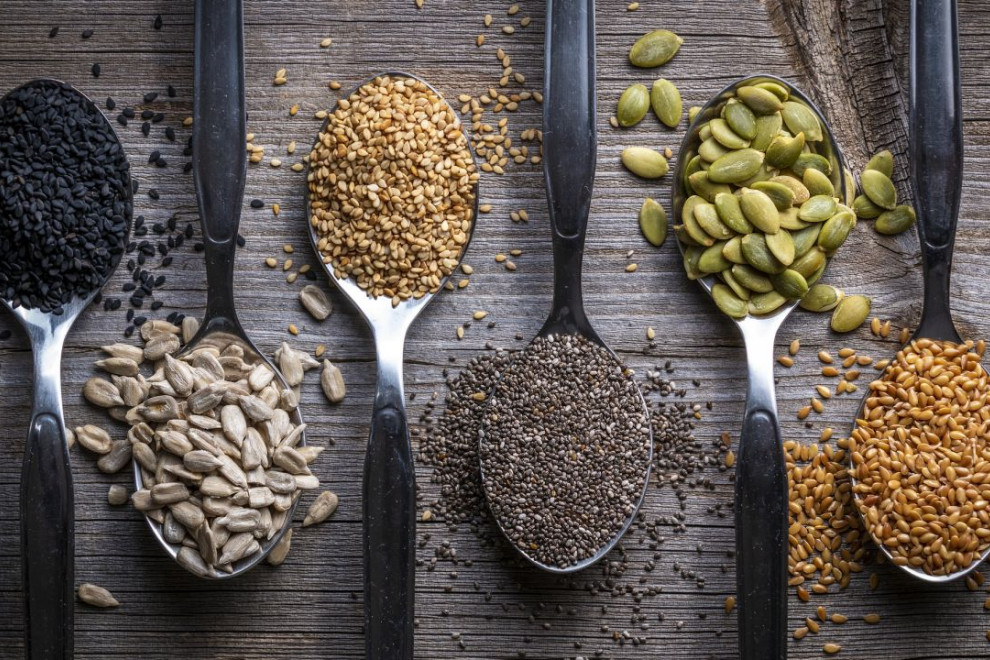

ALGUNOS DE NUESTROS PRODUCTOS
Aca podes encontrar algunos productos de nuestra amplia variedad
Frutos secos
Contamos con la mejor calidad, tanto en productos nacionales, como importados. Dentro de lo nacional contamos con nueces, pasas de uva, mani. Luego en las opciones importadas tenemos almendras, arandanos secos, coco en varias presentaciones.

Semillas
Tenemos semillas de todo tipo y color. Sesamo blanco, negro e integral, semillas de zapallo, chia para tus desayunos y ensaladas, lino dentro de lo mas economico, ya que tambien pensamos en el bolsillo de nuestros consumidores.
Hierbas
Nuestro local cuenta con una amplia gama de hierbas, o como decimos aca en Mendoza "yuyos". Podes encotrar te en todas sus variedades boldo, tilo, manzanilla para calmar las ansias, burro para esos ricos matecitos mañaneros, y muchas mas.